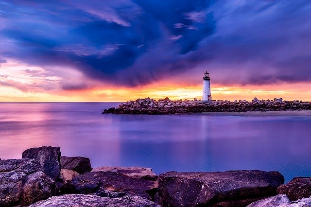

California
The state of California is one of the most popular vacation sites in the United States, and for good reason. The state has so many different attractions for such a wide range of people, you would be hard-pressed to go there and not find something to enjoy.
One of the state's main attractions is its wide variety and sheer number of national parks. The state has nine national parks, more than any other state in the US - and that's not even counting all of the state parks! From valleys and forests to cliffs and beaches, each has something different and breathtaking to offer.
If you would prefer a more resort-style vacation for a family, there is plenty of that to go around as well. California has lots of beach-side resorts, as well as popular attractions like Disney Land.
If you're looking for a travel destination with nearly ulimited options to keep you entertained, California is the place to go.